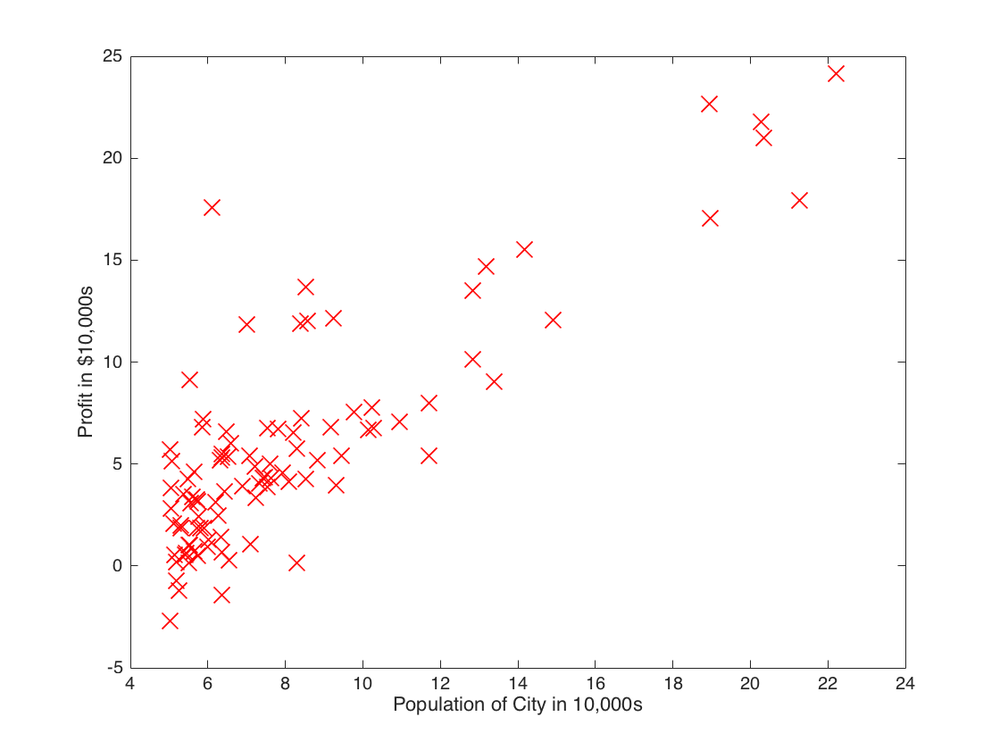
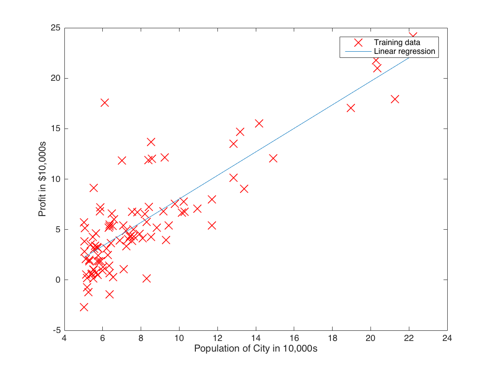
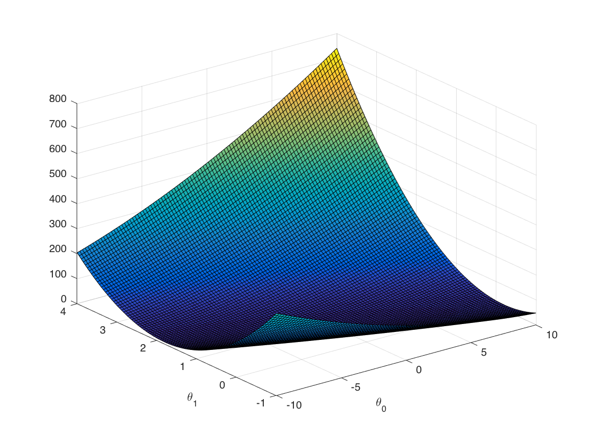
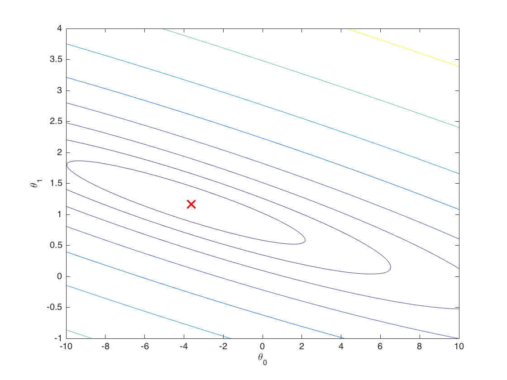

Contents
================ Univariate Linear Regression ===============
Initialization
clear; close all; clc
======================= Part 2: Plotting =======================
fprintf('Plotting Data ...\n')
fprintf('\n');
data = load('food_truck_profit.txt');
X = data(:, 1); y = data(:, 2);
m = length(y);
plotData(X, y);
fprintf('Program paused. Press enter to continue.\n');
pause;
Plotting Data ...
Program paused. Press enter to continue.

=================== Part 3: Gradient descent ===================
fprintf('\n');
fprintf('Running Gradient Descent ...\n')
X = [ones(m, 1), data(:,1)];
theta = zeros(2, 1);
iterations = 1500;
alpha = 0.01;
cost = computeCost(X, y, theta);
theta = gradientDescent(X, y, theta, alpha, iterations);
fprintf('\n');
fprintf('Theta found by gradient descent: ');
fprintf('\n\n');
fprintf('%f \n %f \n', theta(1), theta(2));
fprintf('\n');
hold on;
plot(X(:,2), X * theta, '-')
legend('Training data', 'Linear regression')
hold off
predict1 = [1, 3.5] * theta;
fprintf('For population = 35,000, we predict a profit of: %f\n',...
predict1*10000);
predict2 = [1, 7] * theta;
fprintf('For population = 70,000, we predict a profit of: %f\n',...
predict2*10000);
fprintf('\n');
fprintf('Program paused. Press enter to continue.\n');
pause;
Running Gradient Descent ...
Theta found by gradient descent:
-3.630291
1.166362
For population = 35,000, we predict a profit of: 4519.767868
For population = 70,000, we predict a profit of: 45342.450129
Program paused. Press enter to continue.

============= Part 4: Visualizing J(theta_0, theta_1) =============
fprintf('\n');
fprintf('Visualizing J(theta_0, theta_1) ...\n')
theta0_vals = linspace(-10, 10, 100);
theta1_vals = linspace(-1, 4, 100);
J_vals = zeros(length(theta0_vals), length(theta1_vals));
for i = 1:length(theta0_vals)
for j = 1:length(theta1_vals)
t = [theta0_vals(i); theta1_vals(j)];
J_vals(i,j) = computeCost(X, y, t);
end
end
J_vals = J_vals';
figure;
surf(theta0_vals, theta1_vals, J_vals)
xlabel('\theta_0'); ylabel('\theta_1');
figure;
contour(theta0_vals, theta1_vals, J_vals, logspace(-2, 3, 20))
xlabel('\theta_0'); ylabel('\theta_1');
hold on;
plot(theta(1), theta(2), 'rx', 'MarkerSize', 10, 'LineWidth', 2);
Visualizing J(theta_0, theta_1) ...
 